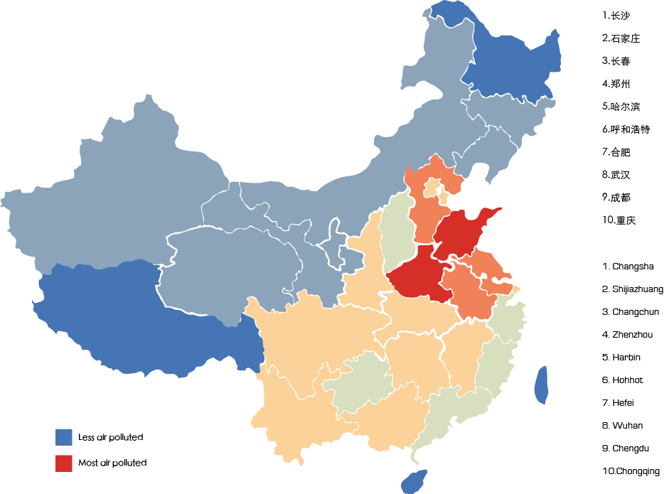

The Chinese capital has for many years suffered from serious air pollution. Primary sources of pollutants include exhaust emission from Beijing's more than five million motor vehicles, coal burning in neighbouring regions, dust storms from the north and local construction dust......
This week's most polluted cities in China

Air Pollution In China
With a booming economy and ever-increasing demand for energy, China has built new coal-fired power plants at an astonishing rate.
Today, coal provides not only 80% of China's electricity, but also the lion's share of its air pollutants, from soot to sulphur dioxide.
While cars and trucks also contribute to air pollution in cities, it will be impossible to improve air quality in China without moving
away from coal.Coal burning is the biggest contributor of air pollution in Beijing and surrounding area, according to a University of
Leeds study sponsored by Greenpeace East Asia. Previous studies have linked outdoor air pollution to premature deaths and child asthma
in the industry-intensive region which arguably has the worst air quality in China.
Under the Dome (Chinese: 穹顶之下; pinyin: qióngdǐng zhī xià) is a 2015 self-financed, Chinese documentary film by Chai Jing, a former China Central Television journalist, concerning air pollution in China. It was viewed over 150 million times on Tencent within three days of its release.